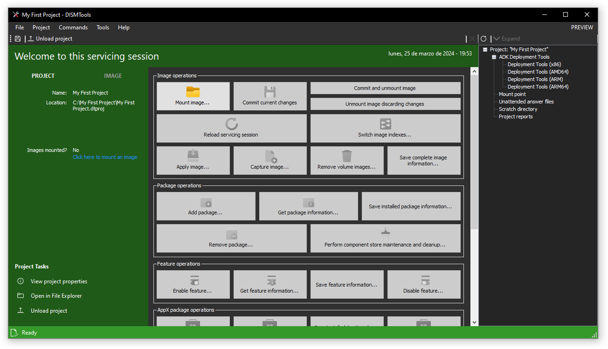
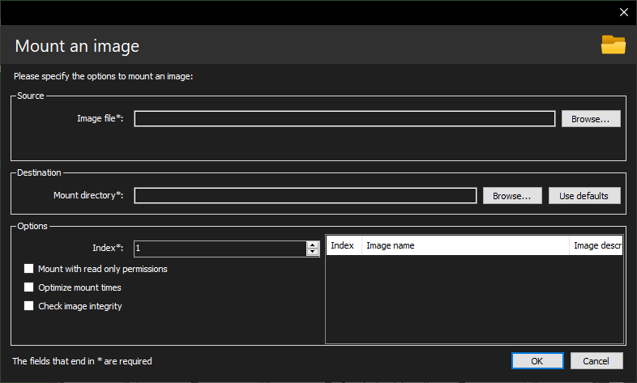
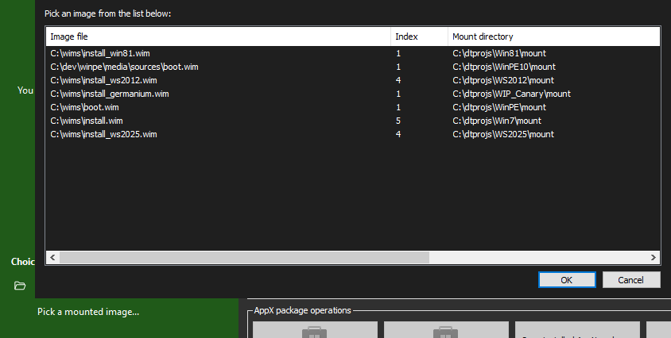

Getting started
If you don't know anything about Windows servicing, or come from other servicing tools, click on a section below to know what's different in this utility:
- Getting started with Windows servicing
- I come from other tools
If you want to know about something else, keep on reading.
First steps
After installation has completed, you may run the program. The following steps are recommended to be done in order to get started
Creating your first project
With the program up and running, you'll begin by creating a project. Use the first link in the main screen, or go to File -> New project...
You'll see the following screen, in which you need to provide a name and a location.

After providing data on both fields, click OK. The project will be created and you'll be at the project screen.

To load this project later, go to "Open an existing project..." and specify the project location.
NOTE: in the future, a Recents list will be implemented
Loading a Windows image
The first thing you need to do after creating a project is to load an image to it. There are 2 ways to do this:
Mounting a Windows image
To mount a Windows image, either click the "Mount image..." button, or click the link in the left panel. You'll see this screen:

Specify the source image file you want to mount and the path you want to mount the image to. You can also configure more settings from this dialog, if you wish. Follow the image mount guide for more information.
INFO: the easiest way of getting a Windows image is by extracting the sources\install.wim file from Windows installation media. This can be easily done by mounting the ISO in the File Explorer or by using 3rd party tools, like 7-Zip.
Once you're done, click OK and wait for the image to be mounted. Finally, you have finished!
Loading an already existing mount directory
Since DISMTools 0.2, the program lets you load a mount directory and use it in your project if you've already mounted a Windows image to it.
To do this, switch to the "Image" tab on the left and click the link on the bottom. Next, specify the mount directory and click OK. That's it!
To look for available mounted images, use the mounted image manager.
NOTE: since version 0.3.2, the aforementioned link will open a popup mounted image picker, instead of a folder browser, that makes this process easier. Simply select a mounted image from the list and click OK:

Best practices
When creating a project and/or managing Windows images, consider these best practices:
Project paths
-
Store your project on a location whose length is not greater than the
MAX_PATHpath length limitation (260 characters)- A great place to store your project on would be at the root of your preferred drive, or in a folder 1 level deep. Such examples would be:
D:\orE:\Projects\ - You can disable this limitation if you're using Windows 10, version 1607 or later, by following these guides
- A great place to store your project on would be at the root of your preferred drive, or in a folder 1 level deep. Such examples would be:
DISM operations
- An antivirus program may prevent you from doing an image task, so it's recommended to set an exclusion to the mount path of the image
- It's not recommended to mount more than 20 images at the same time, as it can cause significant performance degradation
- You must run this program and, at any time, DISM as an administrator, no matter what privileges you may have
- If you have mounted the image with write privileges enabled, it's best to commit your changes often. That way, if the image becomes corrupt, it's easier to recover it
- It's not recommended to store files on network shares, as it can be faster to perform most operations if the files are copied to a local disk
Servicing from Windows PE
If you plan on servicing images from a Windows Preinstallation Environment (WinPE), consider these requirements while planning your strategy:
- Booting Windows PE from a local disk: you can allocate additional memory to your Windows PE installation when booting it from a local disk, to increase performance; and you can create temporary folders to store large updates
- Booting Windows PE from read-only media: if you plan on booting the Windows PE installation from optical media, ensure that your computer has enough memory
- Add a page file to your PE installation: to improve memory management, consider creating a page file. See the
wpeutilcommand reference for more information - Specify a scratch directory: for some operations, like adding packages, it is best to create and specify a scratch directory to store temporary files on. If not specified, Windows PE creates a scratch directory of the size you specified when setting the scratch space. However, you may run out of space on your PE environment